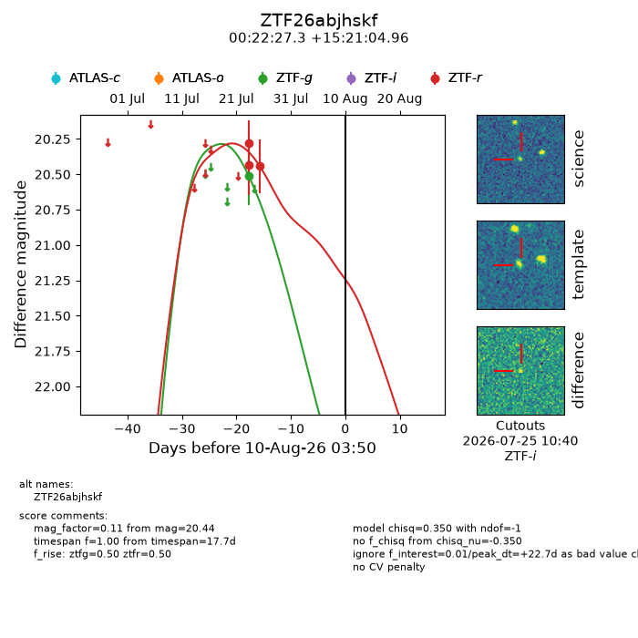
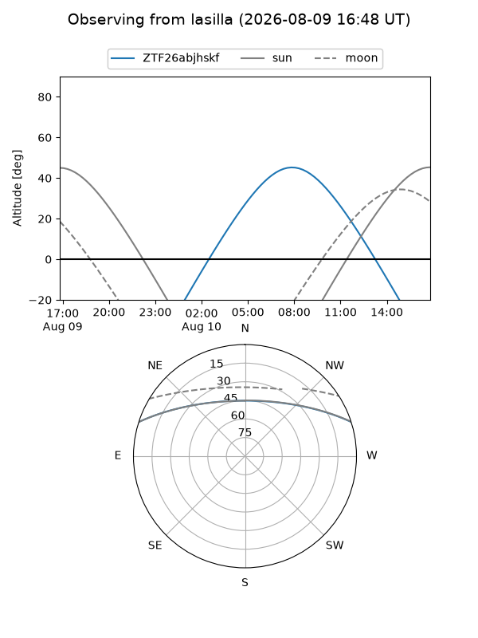
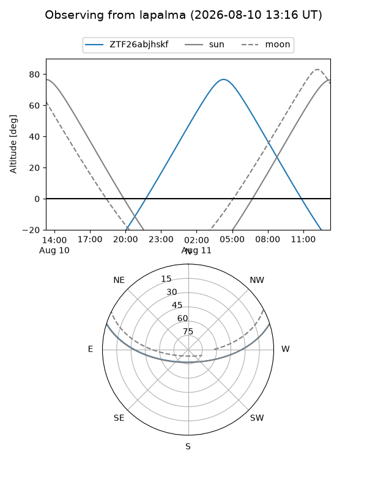
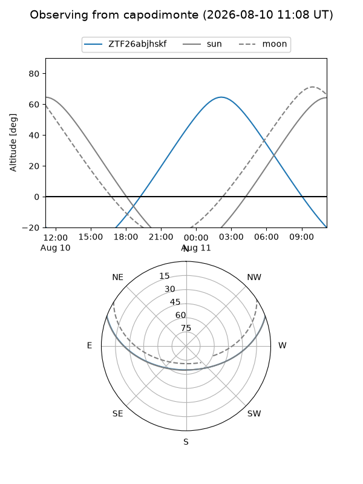
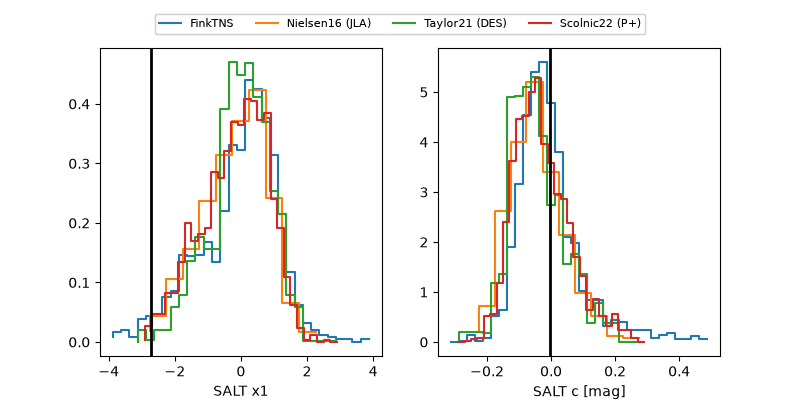

ZTF26abjhskf
Target ZTF26abjhskf at 2026-08-10 14:16
Aliases and brokers:
FINK-ZTF: ztf.fink-portal.org/ZTF26abjhskf
Lasair-ZTF: lasair-ztf.lsst.ac.uk/objects/ZTF26abjhskf
ALeRCE-ZTF: alerce.online/object/ZTF26abjhskf
Direct TNS query: direct search
alt names
ZTF26abjhskf (ztf,fink_ztf)
Coordinates:
equatorial (ra, dec) = 5.6138,+15.35138
equatorial (HMS+DMS) = 00:22:27.30,+15:21:04.96
galactic (l, b) = (112.6703,-46.94208)
Flags:
peak dt: +23.1
Photometry:
last ztfg=20.51, ztfr=20.44
1 ztfg, 3 ztfr detections
Lightcurve

Visibility



Additional plots
